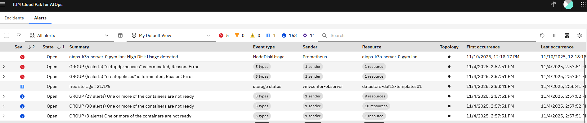
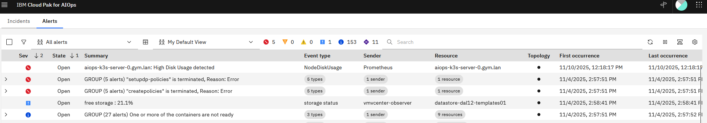
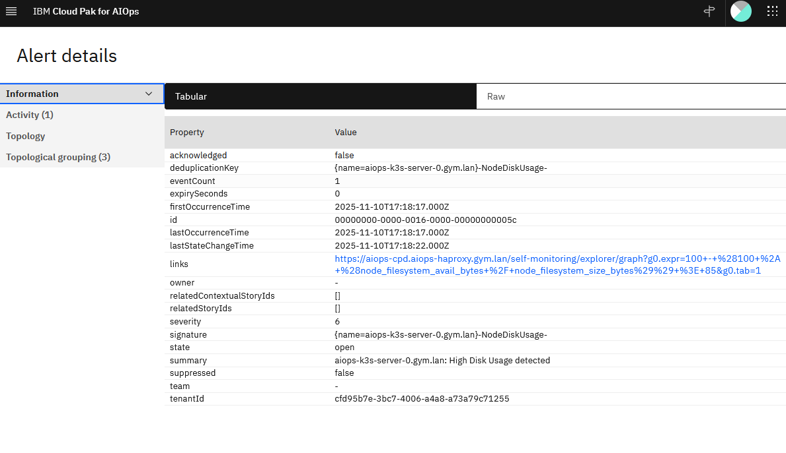
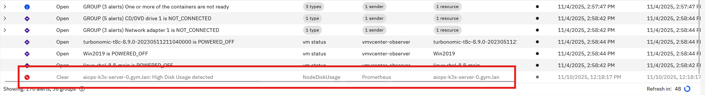

flowchart TD
User((User))
AIOps["AIOps Platform"]
IdP["IdP"]
LDAP[("LDAP Server")]
subgraph "Authorization Flow"
User -->|"(1) Access UI"| AIOps
AIOps -.->|"(2) Redirect for Auth"| IdP
IdP <-->|"(3) Verify Creds and Fetch Groups"| LDAP
IdP == "(4) SAML Token (User + Groups)" ==> AIOps
end
style AIOps fill:#14164a,stroke:#333,stroke-width:2px
style LDAP fill:#eee,stroke:#333,stroke-width:2px
linkStyle 3 stroke-width:4px,fill:none,stroke:green;
AIOps on Linux Configuration
Configuring LDAPS Trust in AIOps
To enable a secure connection (LDAPS) between AIOps and an external LDAP server, you must import the LDAP server’s Certificate Authority (CA) certificate into the platform’s truststore.
Architecture Patterns
Before applying the configuration, it is important to understand why this certificate is needed. There are two common patterns for integrating LDAP with AIOps using SAML.
Option 1: The “Broker” Approach
In this model, the IdP handles all LDAP communication. AIOps learns about user and group data through SAML login attempts.
- Certificate Requirement: The LDAP CA is in the IdP connection to LDAP, not AIOps.
- AIOps Config: No LDAP connection required in AIOps.
| Pros | Cons |
|---|---|
| Simpler Config: AIOps needs no knowledge of LDAP topology. | Role Management: AIOps must first wait to be told about a group from a failed SAML login, then that group can be assigned a role. |
| Single Trust Store: Only the IdP needs the LDAP certificates. |
Option 2: The “Direct Dependency” Approach
In this model, AIOps uses SAML for authentication but connects directly to LDAP to search for user groups and details. The instructions in this document apply to this scenario.
- Certificate Requirement: You must import the LDAP CA into AIOps.
- AIOps Config: Requires an LDAP connection profile in AIOps.
flowchart TD
User((User))
AIOps["AIOps Platform"]
IdP["IdP"]
LDAP[("LDAP Server")]
subgraph "Authorization Flow"
User -->|"(1) Access UI"| AIOps
AIOps -.->|"(2) Redirect for Auth"| IdP
IdP <-->|"(3) Verify Creds Only"| LDAP
IdP == "(4) SAML Token (User Only)" ==> AIOps
AIOps <-->|"(5) Direct Query: Get User Groups"| LDAP
end
style AIOps fill:#f9f,stroke:#333,stroke-width:2px
style LDAP fill:#eee,stroke:#333,stroke-width:2px
linkStyle 3 stroke-width:4px,fill:none,stroke:green;
linkStyle 4 stroke-width:4px,fill:none,stroke:red;
| Pros | Cons |
|---|---|
| Role Management: You can manage all the roles of LDAP users and groups inside the AIOps console immediately. | Complexity: Requires configuring LDAP in two places (IdP and AIOps). |
| Network: AIOps requires direct firewall access to the LDAP server. |
Prerequisites
- Access:
kubectlaccess to the cluster. - Certificate: The CA certificate file (e.g.,
ca.crt) that signed your LDAP server’s certificate.- Note: This must be the Root CA of the LDAP server, not an ingress certificate or a client certificate.
Procedure
1. Encode the Certificate
The certificate must be converted to a single-line Base64 string to be stored in a Kubernetes Secret.
Run the following command on your infrastructure node (Linux):
# Replace 'ca.crt' with your actual filename
cat ca.crt | base64 -w 0
Tip
Mac Users: If you are running this on macOS, use cat ca.crt | base64 (omit the -w 0).
Copy the output string to your clipboard. It will look like a long random string (e.g., LS0tLS1CRUdJTi...).
2. Edit the AIOps Trust Secret
AIOps uses a specific secret named platform-auth-ldaps-ca-cert to store trusted LDAP certificates.
Open the secret for editing:
kubectl edit secret platform-auth-ldaps-ca-cert -n aiopsLocate the
datasection.Find the key named
certificate.- If the key exists: Replace the existing value.
- If the key is empty/missing: Add
certificate:followed by your string.
It should look like this:
apiVersion: v1 data: certificate: <PASTE_YOUR_BASE64_STRING_HERE> kind: Secret metadata: name: platform-auth-ldaps-ca-cert namespace: aiops type: OpaqueSave and exit the editor (usually
Escthen:wqif using vi).
3. Restart the Authentication Service
The authentication pods do not automatically reload the secret. You must restart them to pick up the new certificate.
kubectl delete pod -l component=platform-auth-service -n aiopsWait for the pods to come back up to the Running state:
kubectl get pods -l component=platform-auth-service -n aiops -w4. Verify Connectivity
Once the pods are running, you can test the connection via the AIOps Console or by checking the logs.
To check the logs for successful connection attempts:
kubectl logs -n aiops -l app=platform-identity-provider -fTroubleshooting Common Errors
| Log Error | Probable Cause |
|---|---|
ETIMEDOUT |
Firewall / Network: The pod cannot reach the LDAP IP on port 636. |
Handshake failed |
Certificate: The CA cert in the secret is wrong or expired. |
PKIX path building failed |
Trust: The server provided a cert that the secret’s CA does not sign. |
Self Monitoring
Setting Up a Promethues AlertManager Webhook in AIOps
1. Define the Webhook in the AIOps UI
- Navigate to Integrations in the AIOps console and select Add integration.
- Under the Events category, select Prometheus AlertManager, click Get started.
- Provide a Name (e.g. Prometheus) and optional description for the webhook to identify its purpose (e.g., Prometheus Alerts (Self Monitoring)).
- Select None for Authentication type and click Next.
2. Map Prometheus Alert JSON to AIOps Schema
- In the webhook configuration screen, locate the Mapping section.
- Use the following JSONata mapping:
(
/* Set resource based on labels available */
$resource := function($labels){(
$name := $labels.name ? $labels.name
: $labels.node_name ? $labels.node_name
: $labels.statefulset ? $labels.statefulset
: $labels.deployment ? $labels.deployment
: $labels.daemonset ? $labels.daemonset
: $labels.pod ? $labels.pod
: $labels.container ? $labels.container
: $labels.instance ? $labels.instance
: $labels.app ? $labels.app
: $labels.job_name ? $labels.job_name
: $labels.job ? $labels.job
: $labels.type ? $labels.type: $labels.prometheus;
/* Conditional Namespace Append */
$namespace_appended := $labels.namespace ? ($name & '/' & $labels.namespace) : $name;
/* Check if the determined $name is likely a node/hardware name */
$is_node_alert := $labels.node_name or $labels.instance;
$is_node_alert ? $name : $namespace_appended; /* Only append if NOT a node alert */
)};
/* Map to event schema */
alerts.(
{
"summary": annotations.summary ? annotations.summary: annotations.description ? annotations.description : annotations.message ? annotations.message,
"severity": $lowercase(labels.severity) = "critical" ? 6 : $lowercase(labels.severity) = "major" ? 5 : $lowercase(labels.severity) = "minor" ? 4 : $lowercase(labels.severity) = "warning" ? 3 : 1,
"resource": {
"name": $resource(labels)
},
"type": {
"eventType": $lowercase(status) = "firing" ? "problem": "resolution",
"classification": labels.alertname
},
"links": [
{
"url": generatorURL
}
],
"sender": {
"name": "Prometheus",
"type": "Webhook Connector"
},
"details": labels
}
)
)- Click Save.
3. Generate the Webhook and Capture the URL
- The webhook will start initializing, wait as it intializes.
- A unique Webhook route will be displayed (e.g.,
https://<aiops-domain>/webhook-connector/<id>) once the webhook is Running. - Copy this URL — it will be used in the AlertmanagerConfig in Prometheus to send alerts to AIOps.
Prometheus Alertmanager: Webhook Receiver Configuration for AIOps
This section outlines the steps required to configure the Prometheus Operator’s Alertmanager to successfully send alerts to the AIOps webhook endpoint.
The process involves two main phases:
- Network Configuration: Ensuring the webhook FQDN is resolvable within the cluster.
- Alerting Configuration: Defining the Alertmanager receiver and routing.
1. Network Configuration (DNS Resolution)
The Alertmanager pod must be able to resolve the AIOps webhook FQDN (e.g. whconn-d59baea5-a620-4efd-bfdc-bbbce5314530-aiops.aiops-haproxy.gym.lan). Since this FQDN is custom and resolves to a specific HAProxy IP (192.168.252.9), the entry must be added to CoreDNS.
Update the coredns-custom ConfigMap
Edit the coredns-custom ConfigMap in the kube-system namespace to include the webhook domain, mapping it to your HAProxy IP (192.168.252.9). This approach is necessary since standard Kubernetes DNS does not resolve external domains.
Note: Replace 192.168.252.9 with your actual HAProxy IP if different. Replace <webhook route> with the fqdn from the webhook route generated by AIOps (e.g. whconn-d59baea5-a620-4efd-bfdc-bbbce5314530-aiops.aiops-haproxy.gym.lan)
Additional Note: The below ConfigMap also contains additional DNS mapping to the CloudPak console and the AIOPs UI. This may or may not be applicable to your environment.
kubectl apply -f - <<EOF
apiVersion: v1
kind: ConfigMap
metadata:
name: coredns-custom
namespace: kube-system
apiVersion: v1
data:
default.server: |
cp-console-aiops.aiops-haproxy.gym.lan {
hosts {
192.168.252.9 cp-console-aiops.aiops-haproxy.gym.lan
fallthrough
}
}
aiops-cpd.aiops-haproxy.gym.lan {
hosts {
192.168.252.9 aiops-cpd.aiops-haproxy.gym.lan
fallthrough
}
}
<webhook route> {
hosts {
192.168.252.9 <webhook route>
fallthrough
}
}
EOFRestart CoreDNS
Force CoreDNS to reload the new ConfigMap by restarting the deployment:
kubectl -n kube-system rollout restart deployment corednsAfter CoreDNS restarts, the Alertmanager will be able to resolve the hostname, and all firing alerts will successfully flow to your AIOps webhook.
2. Configure Alertmanager Receiver
Since the Prometheus Operator uses the AlertmanagerConfig Custom Resource (CRD), we define the webhook receiver and routing within this resource.
Define the AlertmanagerConfig CR
Create or update the AlertmanagerConfig CR (named aiops-webhook-receiver in this example) to include the receiver and routing.
Replace the sample webhook route https://whconn-d59baea5-a620-4efd-bfdc-bbbce5314530-aiops.aiops-haproxy.gym.lan/webhook-connector/fj3u0bq23tk with your actual webhook route and save to a file named aiops-alertmanagerconfig.yaml.
apiVersion: monitoring.coreos.com/v1alpha1
kind: AlertmanagerConfig
metadata:
name: aiops-webhook-receiver
namespace: prometheus-operator # Must be in the same namespace as Alertmanager
labels:
alertmanagerConfig: main # Must match your Alertmanager CR selector
spec:
# 1. Define the Receiver
receivers:
- name: 'aiops-webhook-receiver'
webhookConfigs:
- url: 'https://whconn-d59baea5-a620-4efd-bfdc-bbbce5314530-aiops.aiops-haproxy.gym.lan/webhook-connector/fj3u0bq23tk' # REPLACE
sendResolved: true
# Required for self-signed certificates
httpConfig:
tlsConfig:
insecureSkipVerify: true
# 2. Define the Route
route:
receiver: 'aiops-webhook-receiver' # Route all alerts to the new receiver
groupBy: ['alertname', 'severity']
groupWait: 30s
groupInterval: 5m
repeatInterval: 4hApply the Configuration
Apply the manifest:
kubectl apply -f aiops-alertmanagerconfig.yaml3. Alert Lifecycle
This section assumes that you have created a rule in Prometheus to trigger an alert if an AIOps node root filesystem / usage exceeds 90%.
Trigger Storage Alert
Use the following script trigger_disk_alert.sh to trigger a storage alert on the root fileystem of an AIOps node.
#!/bin/bash
# Configuration
TARGET_PERCENT=90
MOUNT_POINT="/"
SAFETY_BUFFER_MB=10 # Add 10MB buffer to ensure we pass the threshold
TARGET_FILE="/tmp/ROOT_FILL_FILE.bin"
echo "--- Disk Usage Alert Trigger ---"
# 1. Get disk statistics for the root filesystem in Kilobytes (KB)
# Uses df -k to get output in KB for precise calculation
if ! STATS=$(df -k "${MOUNT_POINT}" 2>/dev/null | awk 'NR==2{print $2, $3}'); then
echo "Error: Failed to get disk statistics for ${MOUNT_POINT}. Exiting."
exit 1
fi
TOTAL_KB=$(echo "$STATS" | awk '{print $1}')
USED_KB=$(echo "$STATS" | awk '{print $2}')
# AVAILABLE_KB is not strictly needed for the calculation, but useful for debugging
# Calculate percentages using integer arithmetic (multiplying by 100 first for precision)
CURRENT_PERCENT=$(( (USED_KB * 100) / TOTAL_KB ))
# Convert KB to MB for display purposes only
TOTAL_MB=$(( TOTAL_KB / 1024 ))
USED_MB=$(( USED_KB / 1024 ))
echo "Filesystem: ${MOUNT_POINT}"
echo "Total Size: ${TOTAL_MB} MB"
echo "Used Size: ${USED_MB} MB (${CURRENT_PERCENT}%)"
echo "Target: ${TARGET_PERCENT}% usage"
# 2. Check if the disk is already above the target
# Integer check: If (Current Used KB * 100) is >= (Total KB * Target Percent)
if [ $(( USED_KB * 100 )) -ge $(( TOTAL_KB * TARGET_PERCENT )) ]; then
echo "Current usage (${CURRENT_PERCENT}%) is already above the target (${TARGET_PERCENT}%). No file created."
exit 0
fi
# 3. Calculate the required KB to reach the target percentage
# T_target_KB = (TOTAL_KB * TARGET_PERCENT) / 100
TARGET_USAGE_KB=$(( (TOTAL_KB * TARGET_PERCENT) / 100 ))
# Calculate buffer size in KB
SAFETY_BUFFER_KB=$(( SAFETY_BUFFER_MB * 1024 ))
# Required KB = (Target KB - Current Used KB) + Safety Buffer KB
REQUIRED_KB=$(( TARGET_USAGE_KB - USED_KB + SAFETY_BUFFER_KB ))
# 4. Convert required KB to MB (dd count uses 1MB blocks) and round up
# Use shell arithmetic for simple rounding up: (KB + 1023) / 1024
REQUIRED_MB_COUNT=$(( (REQUIRED_KB + 1023) / 1024 ))
# 5. Execute dd command
echo "--------------------------------------"
echo "Creating file of size: ${REQUIRED_MB_COUNT} MB at ${TARGET_FILE}"
echo "This will push usage over ${TARGET_PERCENT}%..."
# Execute the dd command using the calculated count
# Note: Requires sudo access to write to the filesystem
sudo dd if=/dev/zero of="${TARGET_FILE}" bs=1M count="${REQUIRED_MB_COUNT}" 2>/dev/null
# 6. Final verification (Use awk to extract the percentage from df -h)
NEW_PERCENT=$(df -h "${MOUNT_POINT}" | awk 'NR==2{print $5}')
echo "Creation complete."
echo "New usage: ${NEW_PERCENT}"
echo "--------------------------------------"
exit 0Run the script.
chmod +x trigger_disk_alert.sh && ./trigger_disk_alert.shSample output.
--- Disk Usage Alert Trigger ---
Filesystem: /
Total Size: 2916 MB
Used Size: 2041 MB (69%)
Target: 90% usage
--------------------------------------
Creating file of size: 594 MB at /tmp/ROOT_FILL_FILE.bin
This will push usage over 90%...
Creation complete.
New usage: 91%
--------------------------------------Alert in Prometheus
Log in to Prometheus Explorer Alerts console with your AIOps credentials. The URL is https://aiops-cpd.<domain>/self-monitoring/explorer/alerts where <domain> is the network domain AIOps is installed on (e.g. https://aiops-cpd.aiops-haproxy.gym.lan/self-monitoring/explorer/alerts).
Within a few minutes you will see a NodeDiskUsage alert firing.

Alert in AIOps
In AIOps, navigate to the Alerts list. Here you will see the critical Prometheus alert for High Disk Usage.

Double click on the alert to open the details.

Resolve Alert
On the same not where you triggered the disk usage script. Resolve the disk consumption by deleting the created file.
sudo rm -f /tmp/ROOT_FILL_FILE.binAfter a few minutes, Prometheus will clear the alert and the clear action will cascade to AIOps.
